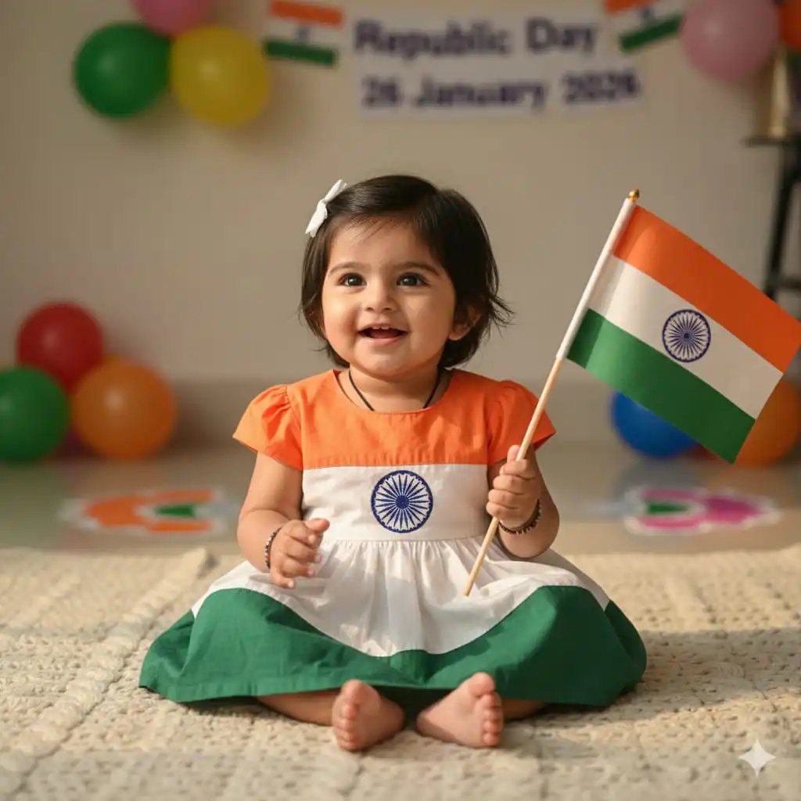

In this post i will share viral 26 January Prompts for photo editing. You can easily edit republic day photo from this prompts.
Want more awesome prompts?
Join our community and get the latest viral prompts daily.
Follow on InstagramI have shared best gemini promtps for 26 January photo editing for kids, boys, girls
26 January Prompts For Baby Kids

? AI PROMPT
A realistic, high-quality photograph of an Indian baby girl (Face exactly same as reference image) sitting on a soft blanket, wearing a tricolor frock (saffron, white, green), holding a small Indian national flag with Ashoka Chakra, innocent smile, soft natural daylight, blurred background, Republic Day 26 January 2026 celebration mood, DSLR photography, 4K

? AI PROMPT
Create a high-resolution, ultra-realistic Indian Republic Day baby portrait using the uploaded image strictly and only for exact facial identity preservation of the baby. The
facial identity must remain perfectly unchanged, including exact face shape, cheek
softness, baby skin texture, eye size and sparkle, eyebrow curve, nose structure, lip shape,
smile expression, hairline, hair thickness, and the gentle joyful look. Do not alter age, facial proportions, or expression in any form. BABY STANCE / POSE (PRECISE & FIXED)
The baby is positioned in a side-lying pose on a soft surface, body angled diagonally
across the frame. The baby's head is slightly tilted and resting gently against the Indiar flag, facing toward the camera with a calm, affectionate smile. One arm is wrapped
around the flag in a hugging gesture, while the other arm rests naturally near the torso. The
legs are softly bent and relaxed, maintaining a comfortable infant posture. OUTFIT & STYLING
• Upper garment: deep green short-sleeve blouse with rich gold floral embroidery, infant- safe and comfortable.
Draping element: sheer saffron-orange dupatta, lightly translucent, flowing from the
• Bottom wear: soft white tulle skirt, airy and layered. • Head accessory: saffron headband with small white and orange floral accents. Jewellery: tiny gold bangles on the wrist, minimal and baby-safe.
The baby is holding and hugging a small Indian national flag with clearly visible saffro white, and green stripes and a centered Ashoka Chakra. A small heart-shaped tricolour prop is placed nearby, subtle yet visible
Soft white fluffy fur backdrop, evenly lit. Light tricolour confetti dots (green and saffron) scattered gently for a festive mood.
Soft, diffused studio lighting. Natural warm skin tones. Gentle, patriotic, and emotionally warm color balance.
FINAL INTENT
The image must convey innocence, warmth, national pride, and emotional connection,
portraying India's future through a joyful baby portrait. The uploaded image is used only for facial identity preservation. All other elements must follow this prompt exactly.

? AI PROMPT
Create a high-resolution, ultra-realistic Indian Republic Day baby portrait using the uploaded image strictly and only for exact facial identity preservation of the baby. The facial identity must remain perfectly unchanged, including exact face shape, cheek fullness, baby skin texture, eye size and spacing, eyebrow softness, nose structure, lip shape, smile curve, hairline, hair density, and the joyfu yful open-mouth smiling expression. Do not alter age, facial proportions, or expression in any way ay.BABY ABY STANCE / POSE (PRECISE & FIXED) The baby is positioned in a straight, centered lying- down pose, aligned vertically in the frame. The head is placed near the upper center, facing directly upward toward the camera. Both arms are naturally bent at the elbows, hands relaxed beside the torso, conveying calm happiness. The legs are gently bent and relaxed, feet close together, maintaining a soft and balanced infant posture. OUTFIT & STYLING (FULL DESCRIPTION) The baby wears a traditional Indian festive outfit styled for Republic Day. • Upper garment: saffron-orange sleeveless drape, neatly wrapped across the torso, finished with a
• Inner layer: white sleeveless blouse, subtly visible beneath the drape. • Bottom wear: soft white dhoti-style cotton pants, loose and breathable. • Head accessory: thin saffron headband with a small orange-and-white fabric flower positioned
above the forehead. • Jewellery: tiny gold bangles on both wrists, minimal and baby-safe. PROP & SYMBOLIC ELEMENT A blue Ashoka Chakra disc is placed near the baby's feet, centered at the lower part of the frame, clearly visible and proportionate. FABRIC & FLAG COMPOSITION (KEY VISUAL) The baby lies on a soft white fur surface. Around the baby, sheer translucent fabric forms a clean vertical tricolour:
• Left: deep Orange translucent fabric
• Center: white translucent fabric beneath the baby • Right: saffron-Green translucent fabric The fabrics appear airy, smooth, and gently layered.
(green and saffron) scattered lightly. No extra props or distractions.
BACKGROUND & ATMOSPHERE Bright, clean background with subtle floating tricolour confetti dots
LIGHTING & COLOR Soft, diffused studio lighting with even illumination. Natural warm skin tones. Pure, joyful, patriotic mood. TEXT (STRICT CONTROL) Exact text: "Little Indian " Placement: bottom- right corner Typography: soft handwritten / cursive style Color: white No glow, ,no no shadow, no outline. final intent
The image must portray India's future through innocence, joy, and cultural pride. The uploaded
image is used only for facial identity preservation. All other elements must follow this prompt

? AI PROMPT
A cinematic portrait of a cute Indian baby girl with a tiny tricolor hairband, sitting calmly and looking at the camera, Indian flag placed beside her, warm lighting, shallow depth of field, patriotic and emotional Republic Day 2026 theme.

? AI PROMPT
A soft pastel-style realistic image of an Indian baby girl crawling on the floor, tricolor decorations around, Ashoka Chakra subtly visible, joyful expression, minimal background, clean aesthetic, Republic Day 26 January 2026 vibe.